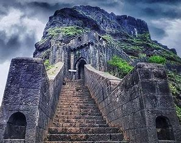

Lohagad Fort
Lohagad, also known as Lohagad Fort, is a historic fort located near Lonavala in Maharashtra, India. It is one of the many forts built by Chhatrapati Shivaji Maharaj and is a popular destination for trekkers and history enthusiasts. Here are some key details about Lohagad:
History
- Built By: The fort is believed to have been built in the 18th century.
- Significance: Lohagad played a significant role during Shivaji Maharaj's reign and was used to store the treasury. It was captured by Shivaji in 1648 and remained under his control until the Treaty of Purandar in 1665, when it was handed over to the Mughals. Shivaji recaptured it in 1670.
Architecture
- Design: Lohagad fort is known for its impressive architecture, which includes four large gates: Ganesh Darwaza, Narayan Darwaza, Hanuman Darwaza, and Maha Darwaza.
- Vinchu Kata: One of the most famous features of Lohagad is the "Vinchu Kata" (Scorpion's Tail), a long and narrow fortified spur that resembles a scorpion's tail.
Location
- Coordinates: 18.7100° N, 73.4883° E
- Elevation: The fort is situated at an elevation of about 1,033 meters (3,389 feet) above sea level.
- Nearby Attractions: Lohagad is located close to Lonavala and Khandala, popular hill stations in Maharashtra. The Bhaja Caves, a group of ancient Buddhist rock-cut caves, are also nearby.
Trekking
- Difficulty Level: The trek to Lohagad is considered easy to moderate, making it suitable for beginners and experienced trekkers alike.
- Duration: The trek typically takes about 2-3 hours to reach the top from the base village, Lohagadwadi.
- Best Time to Visit: The best time to visit Lohagad is during the monsoon season (June to September) when the surroundings are lush green and the weather is pleasant.
Points of Interest
- Panoramic Views: From the top of the fort, visitors can enjoy stunning views of the surrounding hills, valleys, and the Pavana Dam.
- Historic Structures: The fort has several historic structures, including old water tanks, wells, and other remnants from the Maratha period.
Lohagad is not only a historical landmark but also a beautiful spot for nature lovers and adventure seekers.